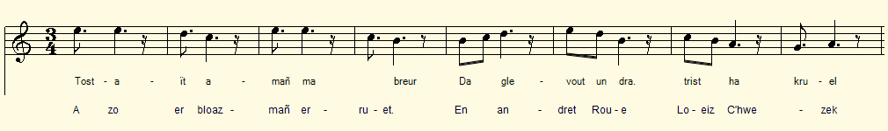
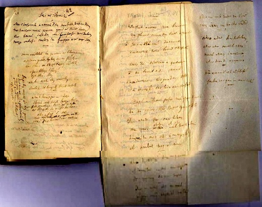

Marv Loeiz C'hwezek
La mort de Louis XVI
The Death of Louis XVI
Chant inséré par La Villemarqué dans le 2ème Carnet de Keransquer (p. 42 bis).
Mélodie
"An Teir Vari"
Arrangement Christian Souchon (c) 2017
|
A propos de la mélodie Il n'est pas certain qu'il s'agisse d'un chant. C'est peut-être un poème. A titre d'illustration, on a choisi comme timbre "An teir Vari - Les trois Marie", un air recueilli auprès de la fameuse Marguerite Philippe de Pluzunet, la chanteuse de François-Marie Luzel, et publié dans les "Musiques bretonnes", de Maurice Duhamel. A propos du texte Ce texte figure sur une feuille grande feuille pliée en quatre et collée en face de de la page 42 du carnet N° 2, où l'on trouve une "Chanson du clerc" suivie d'un chant sans titre, dont procède visiblement le chant du Barzhaz de 1845, 26 L'Hermine. L'écriture semble bien être celle de La Villemarqué (cf. illustration ci-dessous). Bien que le sujet soit le même que celui du chant k76 Loeiz XVI, le niveau littéraire de cette guerz dont la moitié est consacrée aux adieux du roi à ses proches ne peut lui être comparé. |
About the tune We may wonder if this text is meant to be sung It could be a poem. However, by way of illustration, we chose as a vehicle the tune "An teir Vari - The three Maries", an air sung by the famous Marguerite Philippe of Pluzunet, François-Marie Luzel's informant. It was published in the collection "Breton Music" by Maurice Duhamel. About the lyrics This text appears on a large sheet of paper folded in four and stuck opposite to page 42 of notebook N ° 2, with the "Song of the cleric", followed by another untitked song which is the evident source of the 1845 Barzhaz song # 26 "The Stoat". The hand seems to be that of La Villemarqué (see illustration below). Although the topic is the same as in song K76 Loeiz XVI, the literary level of the gwerz at hand, half of which is devoted to the king's farewell to his relatives cannot be compared with the former song. |
|
BREZHONEG (Stumm KLT) 1. Tostait amañ ma breur Da glevout un dra trist ha kruel A zo er bloaz-mañ erruet [1] En andret Roue Loeiz C'hwezek. En deiz disterrañ a Genver [2] O deiz terrupl ! O deiz kruel! Kondaonet eo bet gant ar bobl Da vervel war lein ur chafod. 2. Pobl a Frañs petra m-eus graet deoc'h Na d'emaon ker kasaet ganeoc'h? Deiz arall pé oan-me bihan (bis) Me oe e chadennoù eveldoc'h-c'hwi Hag e oac'h holl o me refuziñ, E'el ho Kuilator [3] hag ho Roue.(bis) 3. Adeo dar vamm deus me ganet! E'el dan tad en-deus me ganet! Dar vagerez deus me savet!(bis) 4. Adeo, ma mouez! Adeo ma map! Nho-peus mui na pried na tad. Adeo ma merc'h! adeo ma c'hoar! Dan neñv me a yelo dan deiz. 5. Adeo, adeo braz ha bihan! Adeo, adeo! Mervel a ran. Ha mervel a ran inosant. Adeo dan deiz a Jujemant! [4] 6. Aotren raen deoc'h al liberté: Goulenn rit ganin ma buhez! Transcrit KLT par Christian Souchon |
FRANCAIS 1. Mon frère, approchez donc ici : Je men vais vous conter un crime Qui cette année se produisit. [1] Le roi Louis XVI en fut victime. Un jour quelconque de janvier, [2] Jour cruel! Folie assassine! Un vain peuple la condamné A mourir par la guillotine. 2. Peuple de France, quai-je fait, Pour qu'à ce point l'on me déteste? Hier l'homme humble que jétais (bis) Enchaîné tout comme vous l'êtes - Vous disiez tous n'en vouloir pas, Comme régent ni comme Roi. [3] (bis) 3. Adieu, mère qui mas porté, Et toi qui mengendras, mon père ; Nourrice qui mas élevé! (bis) 4. Adieu ma femme, adieu mon fils: Vous navez plus époux, ni père! Adieu ma fille, adieu ma sur, Au ciel je men vais, je lespère. 5. Adieu, Français, petits et grands, Je me résigne à rendre lâme: Vous et moi, - qui meurs innocent - Le Jugement, tous, nous réclame. [4] 6. Je vous offris la liberté. Cest ma vie que vous exigiez! Traduction Christian Souchon (c) 2019 |
ENGLISH 1. My brother, draw near, O draw near: Of cruel and sad murder I'll sing Which was perpetrated, this year, [1] On Louis the Sixteenth, our King. On some day in January, [2] A cruel day, by all abhorred! When to die in ignominy. He was sentenced by a court 2."French people, say, what did I do To earn such hatred and disgrace? But yesterday, a humble being,(twice) Just as you are, in chains I laid. And you did not want, you all said, I would be you ruler or king. [3] (twice) 3. Farewell, my mother who bore me, And you who sired me, father dear; And you, my nurse, who raised me! (twice) 4. Farewell my wife, farewell my son: Nobody more to share your pain! My daughter, my sister, farewell In heaven, we will meet again. 5. Farewell, my people, young and old, Now I resign myself to death: You and me - innocent who dies - The Judgment shall claim all of us. [4] 6. Freedom on you I did extend. It is my life that you demand!" Translation Christian Souchon (c) 2019 |
NOTES
|
[1] Arrivé cette année: Ce qui date le chant de 1793. [2] Un jour quelconque de janvier: L'éditeur lit "diweian" (=diwezhañ), "dernier". Or Louis XVI fut guillotiné le 21 janvier 1793. On peut penser qu'il faut lire "disterrañ"= tout à fait "quelconque", "insignifiant", sans doute du point de vue de la religion; Il s'agit de la Sainte Agnès. [3] Régent: Ce passage se lit assez clairement comme étant "el oculat hag o roué" (= evel ho kuilator [?] hag ho roue) "comme votre curateur [?] et votre roi". Il décrit sans doute le statut dégradé de l'institution monarchique à partir du retour de Varenne en juin 1791. [4] Adieu!: les strophes 3 à 5, où le malheureux roi prend congé de sa famille et de sa nourrice sont démarquées, avec plus ou moins d'à-propos, de stances similaires qui abondent dans des gwerzioù empreintes du même dolorisme. En 1793, les parents du roi déchu étaient morts depuis bien longtemps: Louis de France (fils ainé de Louis XV) en 1765 et son épouse, Marie-Josèphe de Saxe, en 1767. En revanche, la nourrice de Louis XVI, Madame Mallard était encore en vie en avril 1791, date à laquelle elle écrivit à l'Assemblée nationale pour réclamer sa pension de nourrice. Sans doute l'était-elle encore le 23 avril 1798 (4 Floréal an VI), date d'une loi fixant le mode de liquidation de ladite pension, approuvée par le Conseil des Anciens, 8 jours plus tard. (Ancien Moniteur depuis les Etats-Généraux jusqu'au Consulat, Tome 29) |
[1] Happened this year: Which dates the song to 1793. [2] Some day in January: The editor of the copybook reads here "diweian" (= diwezhañ), "last". But Louis XVI was guillotined on January 21, 1793. Perhaps we should read "disterrañ" = "any", "of [most] minor importance", possibly from a religious point of view; (in fact, on Saint Agnes day). [3] Regent: This passage reads undoubtedly as "el oculat hag o roué" (= evel ho kuilat[or] [?] hag ho roue) "as your curator [?] and your king". It could describe the degraded status of the monarchical institution from the return of Varenne in June 1791. [4] Farewell !: Stanzas 3 to 5, where the unfortunate king takes leave of his family and his nurse, are derived, more or less aptly, from similar stanzas which abound in gwerzioù drenched with the same passion for suffering (dolorism) . In 1793, the parents of the fallen king had died long ago: Louis of France (eldest son of Louis XV) in 1765 and his wife, Mary-Josepha of Saxony, in 1767. But, the nurse of Louis XVI, Madam Mallard was alive in April 1791, when she wrote a letter to the National Assembly to claim her nanny's pension. No doubt that she still was on April 23, 1798 (4 Floréal year VI), when a by-law was passed to settle the question, approved by the Council of Elders, 8 days later. ("Former Monitor", from the Estates General of 1789 to the Consulate of Bonaparte, Volume 29). |

"Loeiz XVI" de La Villemarqué (c2, pp.19-20)
Louis XVI, version Cadic
"Les Chouans selon Villemarqué", un livre au format A4.  Cliquer sur le lien ou sur l'image ci-dessus |